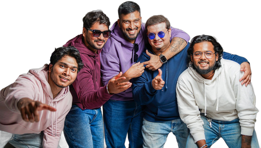

эта
неделя
неделя
с нами
Наша
церковьлоготип
церковьлоготип
Вт 20 окт
Молитва | 19:00
Молитвенный вечер
Чт 22 окт
Библия | 19:30
Изучение Библии
Пт 23 окт
Молодёжь | 19:00
Молодёжный вечер
Вс 25 окт
Служение | 10:00
Первое служение
Служение | 12:30
Второе служение

Адрес церкви
город, улица, домВопросы:
ссылка в профиле
город, улица, домВопросы:
ссылка в профиле